정보처리기능사 (2003-01-26 기출문제)
1과목: 전자 계산기 일반
1. 클록펄스(Clock Pulse)에 의해서 기억 내용을 한자리씩 이동하는 레지스터는?
- 시프트레지스터
- B레지스터
- 누산기
- D레지스터
(정답률: 87%)

2. 제어장치의 기능에 대한 설명으로 옳지 않은 것은?
- 주기억장치에 기억된 명령을 꺼내어 해독한다.
- 산술 및 논리연산을 실행하는 장치이다.
- 프로그램카운터와 명령레지스터를 이용하여 명령어 처리 순서를 제어한다.
- 입, 출력장치를 제어한다.
(정답률: 68%)
3. JK 플립플롭(Flip Flop)에서 보수가 출력되기 위한 입력값 J, K의 입력 상태는?
- J=0, K=1
- J=0, K=0
- J=1, K=1
- J=1, K=0
(정답률: 86%)
4. 드모르간(De Morgan)의 정리에 의하여
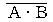
를 바르게 변환시킨 것은?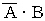
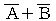
(정답률: 77%)
5. 101101(2)의 2의 보수는 얼마인가?
- 110111(2)
- 111000(2)
- 110001(2)
- 010011(2)
(정답률: 75%)
6. 에러를 검출하고 검출된 에러를 교정하기 위하여 사용되는 코드는?
- ASCII 코드
- BCD 코드
- 8421 코드
- Hamming 코드
(정답률: 86%)
7. 입·출력장치와 중앙연산장치의 속도차로 인한 단점을 해결하는 장치는?
- 터미널(Terminal)장치
- 채널(Channel)장치
- 콘솔(Console)장치
- 제어(Control)장치
(정답률: 76%)
8. 자기디스크(Magnetic Disk) 장치의 주요 구성 요소가 아닌 것은?
- IRG(Inter Record Gap)
- 디스크(Disk)
- 읽고 쓰기 헤드(R/W Head)
- 액세스 암(Access Arm)
(정답률: 54%)
9. 명령어 형식(Instruction Format)에서 첫번째 바이트에 기억되는 것은?
- Operand
- Op Code
- Length
- Question Mark
(정답률: 80%)
10. 8개의 bit로 표현 가능한 정보의 최대 가지수는?
- 256
- 257
- 258
- 255
(정답률: 82%)
11. 불(Boolean) 대수의 정리 중 옳지 않은 것은?
- 1 · A = A
- 0 · A = 0
- 1 + A = A
- 0 + A = A
(정답률: 73%)
12. 다음과 같은 논리식으로 구성되는 회로는?
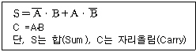
- 전감산기(Full Subtracter)
- 반가산기(Half Adder)
- 전가산기(Full Adder)
- 부호기(Encoder)
(정답률: 80%)
13. 인스트럭션(Instruction)이 제공하는 정보가 아닌 것은?
- 명령어 순서
- 데이터 주소
- 명령어 형식
- 작업 수행 시간
(정답률: 61%)
14. ROM(Read Only Memory)에 대한 옳은 설명은?
- 데이터를 읽고 기록하는것 모두 가능하다.
- 데이터를 기록하는 것만 가능하다.
- 데이터를 읽고 기록하는것 모두 불가능하다.
- 데이터를 읽어내는 것만 가능하다.
(정답률: 70%)
15. 수치연산은 입력되는 수에 따라 단항 및 이항연산으로 구분되는데 이항연산에 해당하지 않는 것은?
- AND
- OR
- ADD
- MOVE
(정답률: 48%)
16. 8진수(Octal Number) 474를 2진수(Binary Number)로 변환(Conversion)하면?
- 010 001 110
- 101 111 101
- 011 110 011
- 100 111 100
(정답률: 69%)
17. 연산에 사용되는 데이터 및 연산의 중간 결과를 레지스터에 저장하는 주된 이유는?
- 연산의 정확도를 높이기 위하여
- 연산 속도의 향상을 위하여
- 비용 절약을 위하여다.
- 기억 장소의 절약을 위하여
(정답률: 72%)
18. 중앙처리장치에서 명령이 실행될 차례를 제어하거나 특정 프로그램과 관련된 컴퓨터 시스템의 상태를 나타내고 유지해 두기 위한 제어 워드로서, 실행중인 CPU의 상태를 포함하고 있는 것은?
- PSW
- MBR
- SP
- MAR
(정답률: 78%)
19. 목적 프로그램을 만들지 않고 직접 한 문장씩 번역하여 실행하는 방식의 언어 처리기는?
- 인터프리터(Interpreter)
- 프리프로세서(Preprocessor)
- 컴파일러(Compiler)
- 어셈블러(Assembler)
(정답률: 49%)
20. 다음 진리표에 해당하는 논리식은?
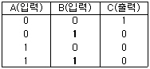
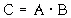
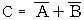
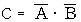
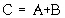
(정답률: 59%)
2과목: 패키지 활용
21. Windows용 프리젠테이션에서 화면 전체를 전환하는 단위를 의미하는 것은?
- 개요
- 개체
- 스크린 팁
- 쪽(슬라이드)
(정답률: 83%)
22. 데이터베이스 시스템의 구성 요소로 가장 적절한 것은?
- 개념 스키마, 핵심 스키마, 구체적 스키마
- 외부 스키마, 핵심 스키마, 내부 스키마
- 개념 스키마, 구체적 스키마, 응용 스키마
- 외부 스키마, 개념 스키마, 내부 스키마
(정답률: 84%)
23. 데이터베이스 디자인 단계의 순서가 옳은 것은?
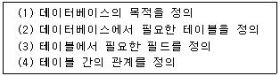
- (1)-(4)-(2)-(3)
- (1)-(3)-(2)-(4)
- (1)-(2)-(4)-(3)
- (1)-(2)-(3)-(4)
(정답률: 69%)
24. 데이터베이스와 관련된 용어 설명으로 옳지 않은 것은?
- 테이블(Table): 서로 다른 종류의 데이터로 저장된 필드를 가진 레코드로 구성된다.
- 질의(Query): 하나 이상의 테이블로부터 일정한 기준에 따라 데이터를 선택, 추출하는 방법을 제공한다.
- 관계(Relation): 각 개체들의 속성값이 유일한 값을 가지는 경우로서, 내림차순 또는 오름차순으로 설정할 수 있다.
- 매크로(Macro): 반복되거나 복잡한 단계를 수행하는 작업을 자동화시켜 일괄적으로 처리하는 방법을 제공한다.
(정답률: 50%)
25. 스프레드시트에서 기본 입력 단위를 무엇이라고 하는가?
- 툴 바
- 셀
- 블록
- 탭
(정답률: 84%)
26. 스프레드시트 작업에서 반복되거나 복잡한 단계를 수행하는 작업을 일괄적으로 자동화시켜 처리하는 방법에 해당하는 것은?
- 필터
- 검색
- 정렬
- 매크로
(정답률: 84%)
27. 사원(사원번호, 이름) 테이블에서 "사원번호"가 "200" 인 튜플을 삭제하는 SQL 문은?
- DELETE FROM 사원 WHERE 사원번호 = 200;
- REMOVE TABLE 사원 WHERE 사원번호 = 200;
- DELETE, 사원번호, 이름 FROM 사원 WHERE 사원번호 = 200;
- DROP TABLE 사원 WHERE 사원번호 = 200;
(정답률: 55%)
28. 하나의 테이블에 한 행의 데이터를 등록하는 방법으로 옳은 것은?
- CREATE TABLE 고객 (계좌번호 NUMBER (3,0), 이름 VARCHAR2 (8), 금액 NUMBER(5,0)) ;
- UPDATE 고객 SET 금액 = 10000 WHERE 이름 = "홍길동";
- INSERT INTO 고객 (계좌번호, 이름, 금액) VALUES(111, 홍길동, 5000);
- SELECT * FROM 고객 ;
(정답률: 49%)
29. 테이블 구조 변경시 사용하는 SQL 명령은?
- CREATE TABLE
- ALTER TABLE
- DROP TABLE
- INSERT TABLE
(정답률: 71%)
30. SQL에서 데이터 검색을 할 경우 검색된 결과값의 중복 레코드를 제거하기 위해 사용되는 옵션은?
- *
- distinct
- all
- cascade
(정답률: 67%)
3과목: PC 운영 체제
31. UNIX 시스템의 셸(Shell)에 대한 설명으로 옳지 않은 것은?
- 셸은 항상 주기억장치에 상주하면서 메모리관리, 작업관리, 파일 관리 등 기능을 조정한다.
- 셸 인터프리트를 사용자가 활용할 수 있다.
- 셸은 사용자가 지정한 명령들을 해석하여 커널로 처리할 수 있도록 전달해 주는 명령 인터프리터이다.
- 셸은 단말장치를 통하여 사용자로부터 명령어를 입력 받는다.
(정답률: 36%)
32. "Windows 98" 에서 현재 활성화된 창(Window)의 프로그램을 종료하는 단축키는?
- Ctrl + C
- Alt + tab
- Ctrl + z
- Alt + F4
(정답률: 85%)
33. 현재의 작업 디렉토리를 나타내기 위한 UNIX 명령은?
- usr
- pwd
- who
- cd
(정답률: 72%)
34. "Windows 98"에서 하드디스크에 있는 파일을 휴지통에 버리지 않고 바로 삭제하려고 한다. 파일 선택 후 어떤 키를 눌러야 하는가?
- Ctrl + Delete
- Delete
- Shift + Delete
- Alt + Delete
(정답률: 75%)
35. 다음은 컴퓨터에서 프로그램 언어의 처리 과정을 나타내고 있다. ( )안에 들어갈 과정을 차례로 나열한 것은?
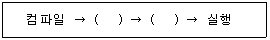
- 로딩(Loading) → 링킹(Linking)
- 링킹(Linking) → 로딩(Loading)
- 어셈블링(Assembling) → 링킹(Linking)
- 링킹(Linking) → 어셈블링(Assembling)
(정답률: 57%)
36. 도스(MS-DOS)에서 "Config.sys" 파일과 "Autoexec.bat" 파일의 수행을 사용자가 선택하여 실행하려고 하는 경우, 사용하는 기능키(Function Key)는?
- F4
- F7
- F8
- F5
(정답률: 59%)
37. "Windows 98"에서는 CD-ROM Title을 드라이브에 넣으면 자동으로 실행되는 기능을 제공하는데, 이 기능을 멈추게 하는 방법은?
- F4 를 누른 채로 삽입
- Ctrl 를 누른 채로 삽입
- Alt 를 누른 채로 삽입
- Shift 를 누른 채로 삽입
(정답률: 49%)
38. 단말장치 사용자가 일정한 시간 간격(Time SliCe) 동안 CPU를 사용함으로써 단독으로 중앙처리장치를 이용하는 것과 같은 효과를 가지는 시스템은?
- 다중프로그래밍 시스템
- 분산 데이터 처리 시스템
- 시분할 처리 시스템
- 병렬 처리 시스템
(정답률: 70%)
39. "Windows 98"의 "제어판"에서 할 수 없는 작업은?
- 시스템 날짜 변경
- 프로그램 추가 및 삭제
- 마우스 환경설정
- 그림 작성 및 수정
(정답률: 67%)
40. "Windows 98"의 시작버튼 위에서 마우스의 오른쪽 버튼을 눌렀을 때 나타나는 메뉴가 아닌 것은?
- 찾기
- 열기
- 설정
- 탐색
(정답률: 56%)
41. 도스(MS-DOS)에서 별도의 실행 파일이 존재하지 않고 "COMMAND.COM"이 메모리에 상주하고 있을 경우, 항상 사용할 수 있는 명령어를 의미하는 것은?
- 배치 명령어
- 실행 명령어
- 외부 명령어
- 내부 명령어
(정답률: 58%)
42. "Windows 98"의 클립보드에 대한 설명으로 옳지 않은 것은?
- 선택된 대상을 클립보드에 오려두기의 단축키는 Ctrl + X 이다.
- 가장 최근에 저장된 파일 하나만을 저장할 수 있다.
- 클립보드에 현재 화면 전체를 복사하는 기능키는 <Print SCreen>이다.
- Windows에서 자료를 일시적으로 보관하는 장소를 제공한다.
(정답률: 44%)
43. "Windows 98"의 탐색기에서 이웃하는 파일들을 선택할 때 사용하는 키와 이웃하지 않는 파일들을 선택할 때 사용하는 키의 나열이 옳은 것은?
- Ctrl , Alt
- Alt , Ctrl
- Shift , Ctrl
- Shift , Alt
(정답률: 70%)
44. 다음 설명은 무엇에 관한 내용인가?
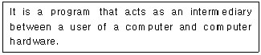
- Job Scheduling
- File System
- Operating System
- Application Program
(정답률: 71%)
45. 도스(MS-DOS)에서 현재의 백업 디스크에 있는 파일들을 지우지 않고 새로운 백업 파일들을 추가하는 명령은?
- BACKUP *.* A: /S
- BACKUP *.* A: /M
- BACKUP *.* A: /D
- BACKUP *.* A: /A
(정답률: 33%)
46. 새로운 서브 디렉토리를 만드는 DOS 명령어는?
- MD
- DEL
- COPY
- REN
(정답률: 67%)
47. 다중 프로그래밍 상에서 두 개의 프로세스가 실행중에 있게 되면, 각 프로세스는 자신이 필요한 자원을 가지고 실행되다가 서로 자신이 점유하고 있는 자원을 포기하지 않은 상태에서 다른 프로세스가 자원을 요구하는 경우가 발생된다. 이 경우 두 프로세스는 모두 더 이상 실행을 할 수 없게 된다. 이러한 현상을 무엇이라 하는가?
- 가상 시스템(Virtual System)
- 세마포어(Semaphore)
- 교착상태(Dead Lock)
- 임계 영역(Critical Section)
(정답률: 84%)
48. How can you find out which switches are available to xcopy.exe at DOS?
- ?/XCOPY
- HELP/XCOPY
- XCOPY/HELP
- XCOPY/?
(정답률: 39%)
49. 교착상태의 발생 조건에 해당하지 않는 것은?
- 순환대기
- 점유와 대기
- 상호배제
- 선점
(정답률: 53%)
50. 도스(MS-DOS)의 필터(Filter)명령어 중 하나 또는 여러 개의 파일에서 특정한 문자열을 검색하는 명령어는?
- SEARCH
- MORE
- FIND
- SORT
(정답률: 53%)
4과목: 정보 통신 일반
51. 신호 속도가 2,400[baud]이며, 쿼드비트(quadbit)를 사용하는 경우 통신 속도[bps]는?
- 1,600[bps]
- 2,400[bps]
- 9,600[bps]
- 4,800[bps]
(정답률: 67%)
52. 펄스의 위치를 변화시켜 변조시키는 방식은?
- PPM
- PWM
- PAM
- PCM
(정답률: 25%)
53. 컴퓨터 네트워크의 목적이 아닌 것은?
- 컴퓨터 소프트웨어 자원의 독점
- 컴퓨터 하드웨어 자원의 공유
- 데이터 자원의 공유
- 컴퓨터 부하의 분산화
(정답률: 54%)
54. 데이터 링크 계층에서 감시 시퀀스의 전송제어문자 중 "ACK" 의 설명으로 올바른 것은?
- 오류검출 결과 정확한 정보를 수신하였음을 나타낸다.
- 수신측에서 문자 동기를 취하기 위해서 사용한다.
- 응답을 요구하는 부호이다.
- 부정적인 의미를 나타낸다.
(정답률: 45%)
55. 통신망 중 방송망으로 이용되지 않는 것은?
- 메시지 교환망
- 근거리 통신망
- 패킷 라디오망
- 인공 위성망
(정답률: 36%)
56. 데이터통신에 관한 설명으로 가장 적합한 것은?
- 음성통신수단을 이용하여 어떤 곳에서 다른 곳으로 이동하는 정보를 전달하는 방법이다.
- 일반 사람들에게 통신서비스를 제공할 목적으로 한국통신에서 설치, 운용하는 통신방식이다.
- 정보의 제공자로부터 정보의 이용자로의 화상신호를 전달하는 시스템이다.
- 규정한 통신규범에 따라 기계와 기계간의 비음성 정보를 전송하는 통신방식이다.
(정답률: 32%)
57. 정보통신신호의 전송이 양쪽에서 가능하나, 동시 전송은 불가능하고 한 쪽 방향으로만 전송이 교대로 이루어지는 통신 방식은?
- 전이중 통신 방식
- 단방향 통신 방식
- 반송주파수 통신 방식
- 반이중 통신 방식
(정답률: 54%)
58. 주파수분할 멀티플렉스(FDM)에 대한 설명으로 옳지 않은 것은?
- 진폭편이 변조방식을 사용
- 진폭 등화를 동시에 수행
- 시분할 멀티플렉스에 비해 간단한 구조
- 재생증폭기는 전체 채널에 하나만 필요
(정답률: 22%)
59. 데이터통신에서 교환기와의 회선접촉 불량에 의하여 생기는 잡음은?
- 위상의곡(Phase Distortion)
- 충격성잡음(Impulse Noise)
- 비선형의곡(Nonlinear Distortion)
- 감쇄(Attenuation)
(정답률: 55%)
60. TV 전파의 일부를 이용해서 문자나 도형정보를 방송하면 시청자들이 단말기와 어댑터 등의 장치를 사용하여 TV 화면으로 그 내용을 시청할 수 있는 미디어는?
- CATV
- CCTV
- Videotex
- Teletext
(정답률: 33%)